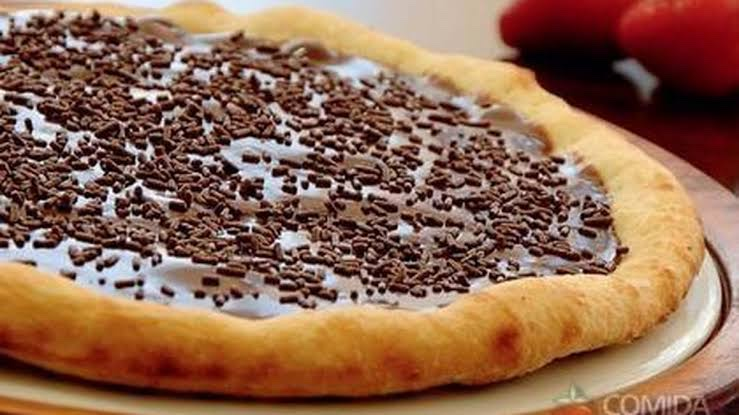

Cheff pizzaiolo 👨🏻🍳
Tradicionais
Calabresa: R$ média 19,90 R$ grande 25,90
Sabor clássico de Calabresa,com a borda super recheada com Catupiry Original.
Inspirada nas mais tradicionais pizzas italianas
Frango com catupiry: R$ média 25,00 R$ grande 29,90
Molho, Frango desfiado, catupiry, Mussarela, Orégano e Azeitonas.
Quatro queijos: R$ média 30,00 R$ grande 33,95
Pizza 4 Queijos é uma irresistível opção para os amantes de queijo.
Com os complementos com muçarela, provolone, parmesão e gorgonzola.
Napolitana: R$ média 29,90 R$ grande 32,50
Leva muçarela, azeite, molho de tomate e manjericão.
Portuguesa: R$ média 28,90 R$ grande 31,90
Ovos, cebola, azeitona, ervilha, queijo e presunto dão sabor
à segunda pizza mais queridinha dos brasileiros.
Pizza doce

Brigadeiro: R$ média 25,90 R$ grande 30,90
Para os amantes de doces os complementos são, cacau 100%,borda recheada com chocolate
Romeu e Julieta: R$ média 27,90 R$ grande 33,80
A combinação mineira de queijo branco e goiabada faz sucesso em todo o país.
Chocolate branco com morango: R$ média 30,00 R$ grande 35,00
Cobertura e Recheio Forneável sabor Chocolate Branco,
Banana com canela: R$ média 31,90 R$ grande 34,89
A pizza de banana com canela, ou banoffee,
recebe uma camada de fruta e o pozinho de canela por cima.
Creme de avelã com frutas: R$ média 29,90 R$ grande 36,90
A mistura de frutas ao famoso creme de avelã é uma combinação mais que perfeita.
Acompanhamentos
Refrigerante
Coca-cola R$ 9,90
Guaraná R$ 7,90
Sucos
Laranja 750 ml, R$ 8,90
uva 750 ml, R$ 8,90